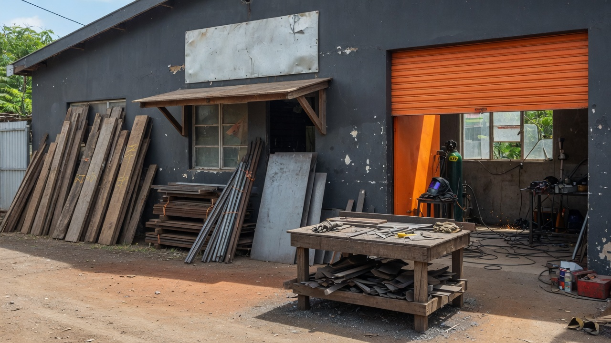

Coupe
Bois, métal, aux cotes. Amenez la pièce ou commandez le matériau.

Familiale depuis 1971 · 5.0 sur Google
Outils, matériaux, machines, meubles et accessoires — et derrière le comptoir : coupe, soudure, commandes spéciales. Royal Road / B13, Grand Baie.
Envoyez une photo de la pièce. On vous dit si on peut la faire.Pourquoi ce site existe
Bois, métal, aux cotes. Amenez la pièce ou commandez le matériau.
Petits travaux de soudure sur place. Décrivez le job au 263 1537.
Ce qui n’est pas en rayon, on le commande. Utile pour les artisans réguliers.
En magasin
Outils pour pros et particuliers.
Fournitures de construction courantes.
Matériel et machines pour l’atelier.
Pièces et accessoires pour la maison.
Horaires
Aucun annuaire fiable ne publie les heures d’ouverture de Singlon. On n’invente pas. Appelez le 263 1537 avant un déplacement le dimanche.
Coupe, soudure, commande
Horaires à confirmer — un WhatsApp évite de venir pour rien.
Demander une coupe / soudure